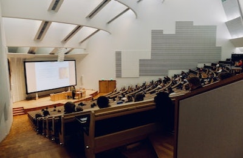

RESEARCH
Research Activities
- In codice Ratio: Machine Learning meets Digital Humanities. Read the MIT Technology Review article on the project!
- Lorenzo Lastilla, Serena Ammirati, Donatella Firmani, Nikos Komodakis, Paolo Merialdo, Simone Scardapane. Self-supervised learning for medieval handwriting identification: A case study from the Vatican Apostolic Library Information Processing & Management 59:3 (2022)
- Elena Nieddu, Donatella Firmani, Paolo Merialdo, Marco Maiorino. In Codice Ratio: A crowd-enabled solution for low resource machine transcription of the Vatican Registers Information Processing & Management 58:2 (2021)
- Donatella Firmani, Marco Maiorino, Paolo Merialdo, Elena Nieddu Towards Knowledge Discovery from the Vatican Secret Archives. In Codice Ratio-Episode 1: Machine Transcription of the Manuscripts. ACM KDD 2018
- Explainable AI for Big Data Management Issues
- Vincenzo Di Cicco, Donatella Firmani, Nick Koudas, Paolo Merialdo, Divesh Srivastava Interpreting deep learning models for entity resolution: an experience report using LIME: Explaining Deep Learning Models for Entity Resolution.. Second International Workshop on Exploiting Artificial Intelligence Techniques for Data Management. Code on github
- Tommaso Teofili, Donatella Firmani, Nick Koudas, Vincenzo Martello, Paolo Merialdo, Divesh Srivastava: Effective Explanations for Entity Resolution Modelsi IEEE ICDE 2022
- Andrea Rossi, Denilson Barbosa, Donatella Firmani, Antonio Matinata, Paolo Merialdo Knowledge Graph Embedding for Link Prediction: A Comparative Analysis. ACM Transactions on Knowledge Discovery from Data 15:2 pp 1–49
- Andrea Rossi, Donatella Firmani, Tommaso Teofili, Paolo Merialdo. Explaining Link Prediction Systems based on Knowledge Graph Embeddings. ACM Sigmod 2022
- Web Data Integration
- Valter Crescenzi, Paolo Merialdo, Disheng Qiu. Hybrid Crowd-Machine Wrapper Inference ACM Transactions on Knowledge Discovery from Data 13:5 pp 1–43 (2019)
- Matteo Cannaviccio, Denilson Barbosa, Paolo Merialdo Towards annotating relational data on the web with language models 2018 World Wide Web Conference
- Disheng Qiu, Luciano Barbosa, Valter Crescenzi, Paolo Merialdo, Divesh Srivastava. Big Data Linkage for Product Specification Pages ACM Sigmod 2018
- Federico Piai, Paolo Atzeni, Paolo Merialdo, Divesh Srivastava. Fine-grained semantic type discovery for heterogeneous sources using clustering VLDBJ 2022 (to appear)
Publications
list of publications from the DBLP Bibliography Server
list of publications and citations from Google Scholar
list of publications and citations on Scopus
Service activity
in the last 5 years
SIGMOD 2023, CIKM 2022, ICDE 2022, SIGMOD 2022; CIKM 2021; VLDB 2021; CIKM 2018: Senior PC member; VLDB 2018: PC member demo track; ICDE 2018: PC member; VLDB 2017: PVLDB review board
Current Fundings
2021-2023 Matrices: Regione Lazio - Gruppi di ricerca (Lazioinnova)
2021-2023 Casa delle Tecnologie Emergenti (MISE)
Tesi e Tirocini

Anni accademici precedenti

Anno accademico 2021-2022
OTHER ACTIVITIES
Innovation and entrepreneurship
Cofounder and organizer of Dock3 - The Startup Lab
Cofounder and organizer of InnovAction Lab
Advisor at the LuissEnlabs accelerator in Rome